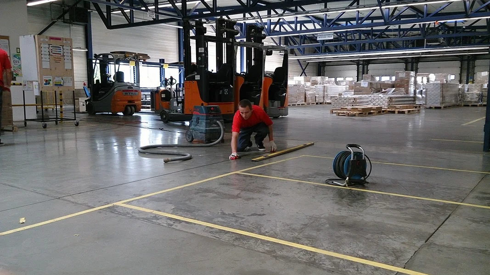
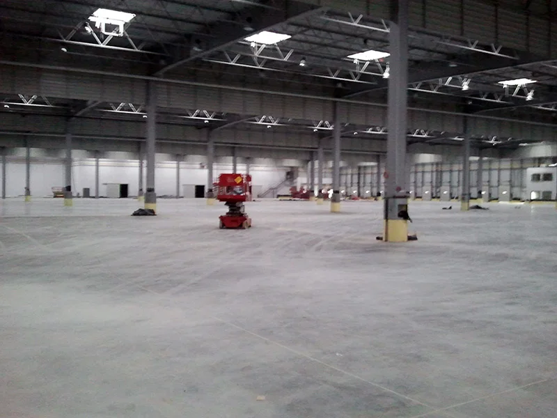
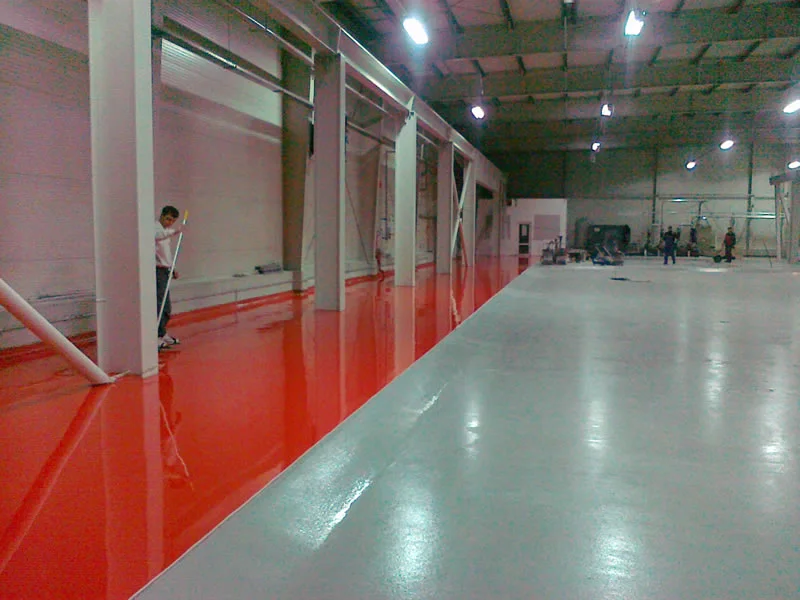
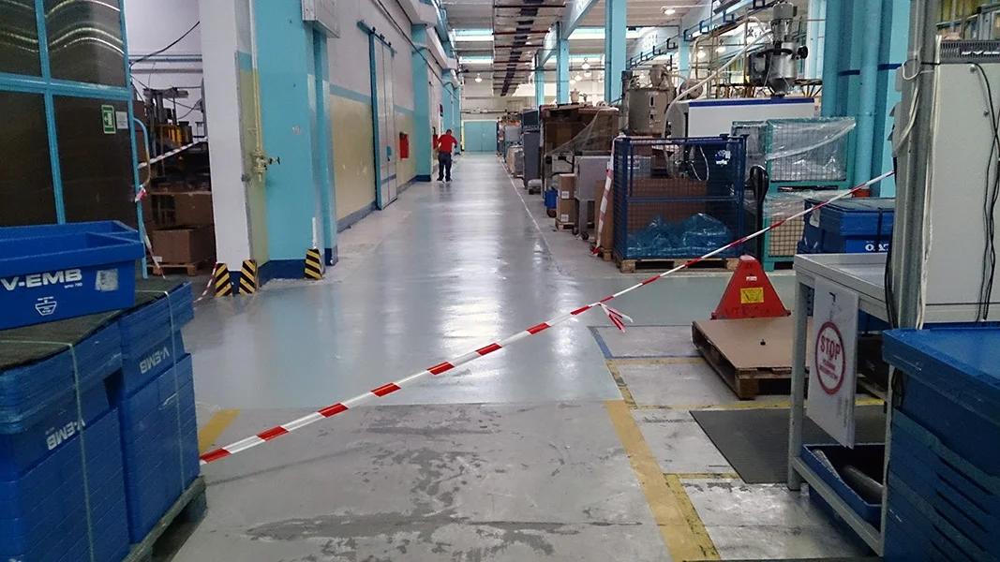
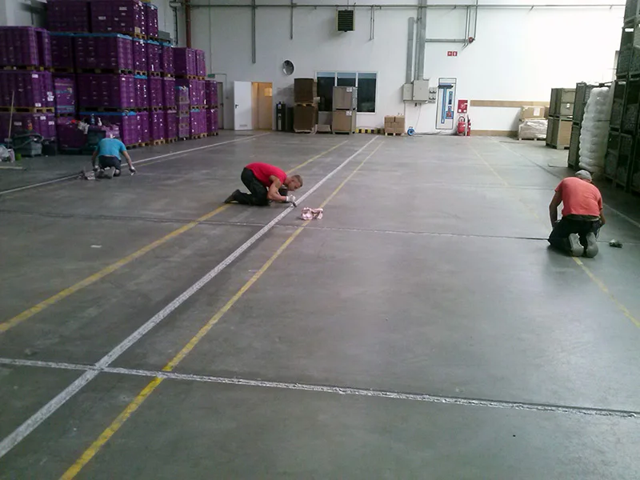
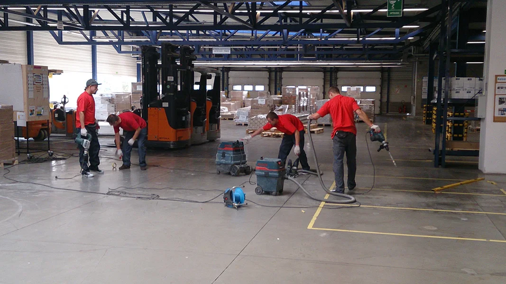
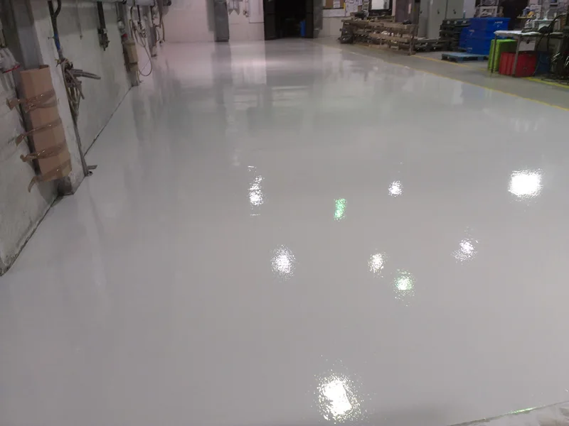
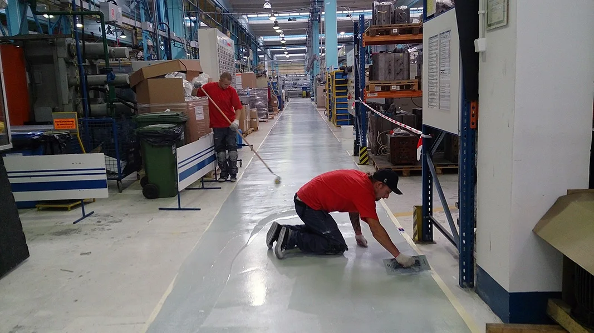
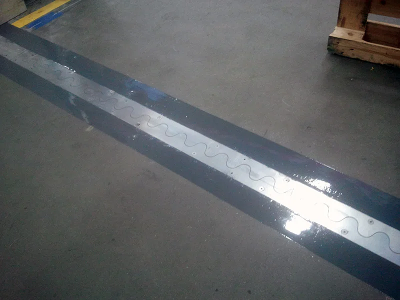

Posadzki przemysłowe, które wytrzymają wózki, chemię i lata pracy
Wykonujemy i naprawiamy posadzki w halach, magazynach i zakładach produkcyjnych w całej Polsce. Rozwiązania szyte na miarę obciążeń, a nie z katalogu.
- LG
- Philips
- Newag
- Netto
- Eurocash
- Vorwerk Autotec
- Mispol
- LPG-Tech
Wykonujemy i naprawiamy posadzki przemysłowe
Grubość, zbrojenie i wykończenie dobieramy do tego, co faktycznie będzie jeździć i stać na posadzce. Każda usługa dostanie osobną podstronę pod wyszukiwarkę.

Posadzki betonowe
Nowe posadzki w halach i magazynach, zbrojone i zacierane mechanicznie, z utwardzoną powierzchnią.
Więcej →
Posadzki żywiczne
Epoksydowe i poliuretanowe powłoki, ciągi komunikacyjne i strefy w kolorze, łatwe do utrzymania w czystości.
Więcej →
Naprawy i renowacje
Odbudowa zniszczonych nawierzchni betonowych i powłok żywicznych, strefami, bez zamykania hali.
Więcej →
Naprawa dylatacji
Odbudowa wykruszonych krawędzi, nowe wypełnienia i profile tam, gdzie jeżdżą wózki.
Więcej →
Klawiszujące płyty
Stabilizacja płyt, które uginają się i stukają pod wózkami, zanim zniszczą dylatacje i koła.
Więcej →
Pylenie i wzmocnienie
Wzmacnianie nawierzchni betonowych, które się kurzą, oraz cokoły i wyoblenia przy ścianach.
Więcej →Jaka posadzka do Twojej hali? Sprawdź w minutę
Zaznacz, co to za obiekt i czego potrzebujesz. Pokażemy wstępnie dobrany system, a zapytanie trafi do nas z kompletem informacji.
Posadzki od Suwałk po Nowy Sącz
Wybrane miejsca, w których pracowaliśmy. Kliknij nazwę, a mapa pokaże lokalizację.
- Baza WIDERSEłk
- LGMława
- PhilipsKętrzyn
- NewagNowy Sącz
- LPG-TechBiałystok
- Dekor-Glas, Hainz-GlasDziałdowo
- GraformBydgoszcz
- Vorwerk AutotecBrodnica
- MispolSuwałki
- Sungsan-ZemEłk


Zanim zlecisz posadzkę
Konkretne odpowiedzi na pytania, które słyszymy od kierowników hal i inwestorów.
Klawiszujące płyty posadzki: skąd się biorą i jak je naprawić bez wyłączania hali
Stuk pod kołem wózka na dylatacji to znak, że sąsiednie płyty przestały pracować razem. Wyjaśniamy, skąd się to bierze, jak to zmierzyć i w jakiej kolejności naprawiać posadzkę, żeby hala pracowała dalej.
Czytaj →Posadzka żywiczna czy betonowa w hali: co wybrać do magazynu, produkcji i przemysłu spożywczego
Beton z utwardzeniem i posadzka żywiczna nie konkurują ze sobą, tylko odpowiadają na inne obciążenia. Pokazujemy, jak dobrać rozwiązanie do magazynu, produkcji i przemysłu spożywczego.
Czytaj →Pylenie posadzki betonowej: dlaczego beton się kurzy i jak to zatrzymać na lata
Pył z posadzki betonowej to ścierająca się warstwa wierzchnia, która jest za słaba na pracę hali. Wyjaśniamy, skąd się bierze, jak ją ocenić i które metody zatrzymują pylenie trwale.
Czytaj →Powiedz, co się dzieje z posadzką
Zadzwoń albo napisz, jaka to hala, ile metrów i co jest do zrobienia. Najlepiej z kilkoma zdjęciami. Odezwiemy się z propozycją oględzin.
WIDERS
Sędki 14, 19-300 Ełk